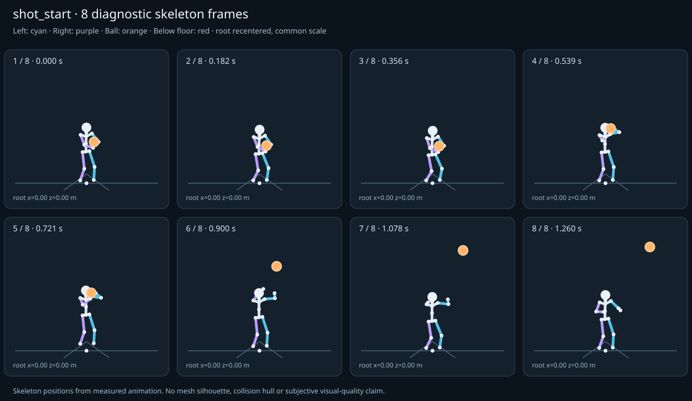

מה הוריד את הציון
- קפיצות פוזה: RightForeArm בזמן 0.7686 ש׳; קפיצת סיבוב שקולה 35.0073 מעלות ב־60Hz (צהוב)
- כניסה ויציאה מול המתנה: פער ב־כניסה מול המתנה; יחס חריגה 1.6982 (צהוב)
כיסוי: 100%. לא כל מדד חל על כל קליפ; הסטטוס והראיות מפורטים למטה.
שמונה פריימים
תצוגת שלד אבחונית שנבנתה מהפריימים הנמדדים. צד שמאל בכחול, ימין בסגול, כדור בכתום. מיקום השורש ממורכז לצפייה; מיקומו בעולם כתוב בכל פריים.

המדדים והראיות
| מדד | מצב | ערך | ציון | סף ופרטי מדידה |
|---|---|---|---|---|
| החלקת רגליים | ירוק | 0 height ratio | 100 | {
"definition": {
"label": "החלקת רגליים",
"unit": "height ratio",
"green": 0.01,
"yellow": 0.035,
"weight": 18,
"description": "Maximum horizontal sole displacement from the first sample of each declared support window, divided by character height. Inferred support is used only when no windows were supplied."
},
"value": 0.000003,
"status": "green",
"score": 99.99,
"evidence": {
"coordinateSpace": "authored reference world (simulation-owned)",
"supportSource": "declared",
"windows": 4,
"samples": 350,
"maxDriftMeters": 0.000005,
"p95SpeedMetersPerSecond": 0.000733,
"worst": {
"bone": "LeftFoot",
"t": 1,
"start": 0.9324,
"end": 1.26,
"driftMeters": 0.000005
}
}
} |
| חדירה לרצפה | ירוק | 0 height ratio | 100 | {
"definition": {
"label": "חדירה לרצפה",
"unit": "height ratio",
"green": 0.005,
"yellow": 0.02,
"weight": 15,
"description": "Maximum depth of the supplied sole probe points and all skeletal joint centers below the declared floor plane, divided by height. Sole probes are not a mesh collision audit."
},
"value": 0.000014,
"status": "green",
"score": 99.94,
"evidence": {
"samples": 4640,
"floorY": 0,
"probeKind": "declared sole probes plus skeletal joint centers (no mesh surfaces)",
"maxDepthMeters": 0.000024,
"worst": {
"t": 0.983333,
"bone": "LeftFoot",
"depthMeters": 0.000024,
"y": -0.000024
}
}
} |
| קפיצות פוזה | צהוב | 2.357 discontinuity ratio | 53 | {
"definition": {
"label": "קפיצות פוזה",
"unit": "discontinuity ratio",
"green": 1,
"yellow": 2.5,
"weight": 18,
"description": "Maximum adjacent 60 Hz-equivalent step: root-relative marker displacement / 0.04 height, root-relative rotation / 15 degrees, or root translation / 0.08 height. A fast continuous action can also exceed this screening threshold."
},
"value": 2.356871,
"status": "yellow",
"score": 52.86,
"evidence": {
"adjacentPairs": 231,
"observations": 3927,
"maxDegrees60Hz": 35.007252,
"maxMarkerStepHeight60Hz": 0.094275,
"maxRootStepHeight60Hz": 0,
"worst": {
"ratio": 2.356871222054796,
"t": 0.7686,
"previousTime": 0.766667,
"bone": "RightForeArm",
"markerStepHeight60Hz": 0.094275,
"degrees60Hz": 35.007252
}
}
} |
| חריגות אנטומיות | ירוק | 0 % affected frames | 100 | {
"definition": {
"label": "חריגות אנטומיות",
"unit": "% affected frames",
"green": 0.5,
"yellow": 3,
"weight": 14,
"description": "Percentage of frames with elbow or knee flexion above 165 degrees, neck bend above 80 degrees, or a segment length changing by more than 5%. Optional calibrated hinge checks detect reverse knee flexion above 8 degrees. Conservative marker limits do not diagnose axial joint twist."
},
"value": 0,
"status": "green",
"score": 100,
"evidence": {
"testedFrames": 232,
"affectedFrames": 0,
"checks": 3944,
"maxLimbFlexionDegrees": 117.42145,
"maxRelativeSegmentLengthChange": 0,
"hingeDirectionChecked": true,
"axialTwistChecked": false,
"violations": []
}
} |
| מגע בכדור | ירוק | 0.001 height ratio | 98 | {
"definition": {
"label": "מגע בכדור",
"unit": "height ratio",
"green": 0.015,
"yellow": 0.05,
"weight": 13,
"description": "Maximum absolute distance from the ball surface to the sampled, bone-transformed declared contact point, divided by height. Events are evaluated at their exact declared times by interpolation."
},
"value": 0.001199,
"status": "green",
"score": 98.4,
"evidence": {
"radiusMeters": 0.12,
"samples": 270,
"missed": [],
"contacts": [
{
"t": 0.766667,
"bone": "RightHand",
"gapMeters": 0.002027,
"signedGapMeters": -0.002027,
"centerDistanceMeters": 0.117973,
"contactPoint": [
-0.063973,
1.636486,
0.379344
],
"ballCenter": [
-0.065,
1.719948,
0.462714
],
"declaredLocalPoint": true
},
{
"t": 0.75,
"bone": "RightHand",
"gapMeters": 0.000417,
"signedGapMeters": -0.000417,
"centerDistanceMeters": 0.119583,
"contactPoint": [
-0.064324,
1.552463,
0.320236
],
"ballCenter": [
-0.065,
1.636924,
0.404888
],
"declaredLocalPoint": true
},
{
"t": 0.433333,
"bone": "RightHand",
"gapMeters": 0.000165,
"signedGapMeters": -0.000165,
"centerDistanceMeters": 0.119835,
"contactPoint": [
-0.048425,
1.121235,
0.301039
],
"ballCenter": [
-0.048449,
1.205189,
0.386551
],
"declaredLocalPoint": true
},
{
"t": 0.45,
"bone": "RightHand",
"gapMeters": 0.000153,
"signedGapMeters": -0.000153,
"centerDistanceMeters": 0.119847,
"contactPoint": [
-0.05181,
1.175131,
0.29766
],
"ballCenter": [
-0.051818,
1.259091,
0.383182
],
"declaredLocalPoint": true
},
{
"t": 0.416667,
"bone": "RightHand",
"gapMeters": 0.000151,
"signedGapMeters": -0.000151,
"centerDistanceMeters": 0.119849,
"contactPoint": [
-0.045132,
1.068739,
0.304312
],
"ballCenter": [
-0.045169,
1.152705,
0.389831
],
"declaredLocalPoint": true
},
{
"t": 0.466667,
"bone": "RightHand",
"gapMeters": 0.000121,
"signedGapMeters": -0.000121,
"centerDistanceMeters": 0.119879,
"contactPoint": [
-0.055086,
1.227343,
0.29437
],
"ballCenter": [
-0.055083,
1.311323,
0.379917
],
"declaredLocalPoint": true
},
{
"t": 0.4,
"bone": "RightHand",
"gapMeters": 0.000118,
"signedGapMeters": -0.000118,
"centerDistanceMeters": 0.119882,
"contactPoint": [
-0.042121,
1.020614,
0.307296
],
"ballCenter": [
-0.042163,
1.104605,
0.392837
],
"declaredLocalPoint": true
},
{
"t": 0.483333,
"bone": "RightHand",
"gapMeters": 0.000082,
"signedGapMeters": -0.000082,
"centerDistanceMeters": 0.119918,
"contactPoint": [
-0.058066,
1.274943,
0.291359
],
"ballCenter": [
-0.058059,
1.358943,
0.376941
],
"declaredLocalPoint": true
},
{
"t": 0.383333,
"bone": "RightHand",
"gapMeters": 0.000078,
"signedGapMeters": -0.000078,
"centerDistanceMeters": 0.119922,
"contactPoint": [
-0.039552,
0.979442,
0.309836
],
"ballCenter": [
-0.039591,
1.063457,
0.395409
],
"declaredLocalPoint": true
},
{
"t": 0.5,
"bone": "RightHand",
"gapMeters": 0.000046,
"signedGapMeters": -0.000046,
"centerDistanceMeters": 0.119954,
"contactPoint": [
-0.060594,
1.315418,
0.28879
],
"ballCenter": [
-0.060589,
1.39943,
0.374411
],
"declaredLocalPoint": true
},
{
"t": 0.4,
"bone": "LeftHand",
"gapMeters": 0.000044,
"signedGapMeters": -0.000044,
"centerDistanceMeters": 0.119956,
"contactPoint": [
0.075491,
1.104649,
0.369451
],
"ballCenter": [
-0.042163,
1.104605,
0.392837
],
"declaredLocalPoint": true
},
{
"t": 0.366667,
"bone": "RightHand",
"gapMeters": 0.000043,
"signedGapMeters": -0.000043,
"centerDistanceMeters": 0.119957,
"contactPoint": [
-0.037543,
0.947134,
0.311818
],
"ballCenter": [
-0.037573,
1.031162,
0.397427
],
"declaredLocalPoint": true
},
{
"t": 0.416667,
"bone": "LeftHand",
"gapMeters": 0.000039,
"signedGapMeters": -0.000039,
"centerDistanceMeters": 0.119961,
"contactPoint": [
0.072498,
1.152741,
0.366483
],
"ballCenter": [
-0.045169,
1.152705,
0.389831
],
"declaredLocalPoint": true
},
{
"t": 0.383333,
"bone": "LeftHand",
"gapMeters": 0.000037,
"signedGapMeters": -0.000037,
"centerDistanceMeters": 0.119963,
"contactPoint": [
0.078061,
1.063491,
0.371977
],
"ballCenter": [
-0.039591,
1.063457,
0.395409
],
"declaredLocalPoint": true
},
{
"t": 0.733333,
"bone": "RightHand",
"gapMeters": 0.000035,
"signedGapMeters": -0.000035,
"centerDistanceMeters": 0.119965,
"contactPoint": [
-0.064805,
1.48514,
0.279545
],
"ballCenter": [
-0.065,
1.569441,
0.364897
],
"declaredLocalPoint": true
},
{
"t": 0.433333,
"bone": "LeftHand",
"gapMeters": 0.000026,
"signedGapMeters": -0.000026,
"centerDistanceMeters": 0.119974,
"contactPoint": [
0.069235,
1.205192,
0.363226
],
"ballCenter": [
-0.048449,
1.205189,
0.386551
],
"declaredLocalPoint": true
},
{
"t": 0.633333,
"bone": "RightHand",
"gapMeters": 0.000024,
"signedGapMeters": -0.000024,
"centerDistanceMeters": 0.119976,
"contactPoint": [
-0.065002,
1.405267,
0.284353
],
"ballCenter": [
-0.065,
1.489284,
0.37
],
"declaredLocalPoint": true
},
{
"t": 0.366667,
"bone": "LeftHand",
"gapMeters": 0.000023,
"signedGapMeters": -0.000023,
"centerDistanceMeters": 0.119977,
"contactPoint": [
0.080085,
1.03118,
0.373951
],
"ballCenter": [
-0.037573,
1.031162,
0.397427
],
"declaredLocalPoint": true
},
{
"t": 0.65,
"bone": "RightHand",
"gapMeters": 0.000023,
"signedGapMeters": -0.000023,
"centerDistanceMeters": 0.119977,
"contactPoint": [
-0.065001,
1.405904,
0.284053
],
"ballCenter": [
-0.065,
1.489922,
0.369701
],
"declaredLocalPoint": true
},
{
"t": 0.516667,
"bone": "RightHand",
"gapMeters": 0.000021,
"signedGapMeters": -0.000021,
"centerDistanceMeters": 0.119979,
"contactPoint": [
-0.062561,
1.346936,
0.286786
],
"ballCenter": [
-0.062559,
1.430949,
0.372441
],
"declaredLocalPoint": true
}
],
"contactDetailsTruncated": true,
"coordinateSpace": "authored reference world (simulation-owned)"
}
} |
| כניסה ויציאה מול המתנה | צהוב | 1.698 continuity ratio | 70 | {
"definition": {
"label": "כניסה ויציאה מול המתנה",
"unit": "continuity ratio",
"green": 1,
"yellow": 3,
"weight": 10,
"description": "Worst entry/exit mismatch to the best matching idle phase: RMS marker error / 0.04 height, RMS bone rotation / 25 degrees, or RMS endpoint velocity error / 0.75 height per second. Horizontal root translation is aligned; root height and body pose remain measurable."
},
"value": 1.698172,
"status": "yellow",
"score": 69.53,
"evidence": {
"entry": {
"ratio": 1.6981723374962936,
"t": 0,
"idleTime": 0.780377,
"markers": 17,
"rmsPositionHeight": 0.067927,
"rmsRotationDegrees": 38.942612,
"rmsVelocityHeightPerSecond": 0.116115,
"velocityEvaluated": true
},
"exit": {
"ratio": 0.9340650084088854,
"t": 1.26,
"idleTime": 0.863396,
"markers": 17,
"rmsPositionHeight": 0.029713,
"rmsRotationDegrees": 23.351625,
"rmsVelocityHeightPerSecond": 0.063495,
"velocityEvaluated": true
},
"worstEndpoint": "entry",
"alignment": "horizontal root translation; raw asset poses used when provided"
}
} |
| מהירות גוף מול צעדים | לא חל | — relative speed error | — | {
"definition": {
"label": "מהירות גוף מול צעדים",
"unit": "relative speed error",
"green": 0.2,
"yellow": 0.5,
"weight": 8,
"description": "Relative difference between average root travel speed and the median backward support-foot sweep speed relative to the root. Cadence and implied stride lengths are also reported. In-place clips need an explicit reference travel scenario; stationary actions are not scored as locomotion."
},
"value": null,
"status": "not-applicable",
"score": null,
"reason": "This action is not declared locomotion.",
"evidence": {}
} |
| סימטריה | ירוק | 0 relative mismatch | 100 | {
"definition": {
"label": "סימטריה",
"unit": "relative mismatch",
"green": 0.03,
"yellow": 0.1,
"weight": 4,
"description": "Maximum bilateral segment-length mismatch. Looping locomotion additionally compares reflected half-cycle leg markers; explicit pose symmetry compares simultaneous bilateral markers. One-sided actions retain unscored motion diagnostics, so a valid kick or dribble arm is not penalized for intentional asymmetry."
},
"value": 0,
"status": "green",
"score": 100,
"evidence": {
"mode": "structural",
"modeSource": "structural default for intentional asymmetry",
"structuralMismatch": 0,
"segments": [
{
"segment": "Arm-ForeArm",
"mismatch": 0
},
{
"segment": "ForeArm-Hand",
"mismatch": 0
},
{
"segment": "UpLeg-Leg",
"mismatch": 0
},
{
"segment": "Leg-Foot",
"mismatch": 0
}
],
"motionRmsHeight": null,
"worstMotion": null,
"bilateralPoseRmsHeightUnscored": 0.068516,
"note": "One-sided authored actions are checked for structural symmetry only."
}
} |